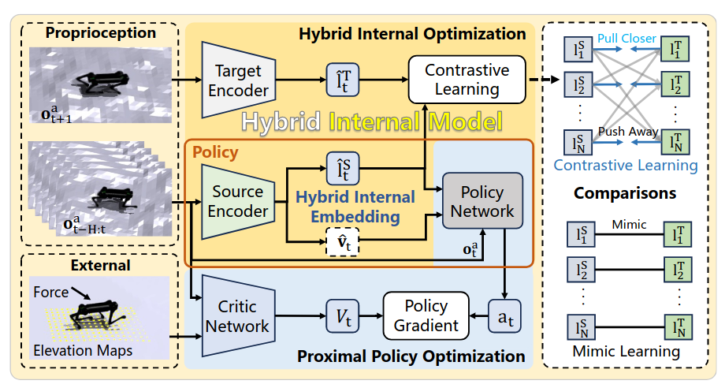
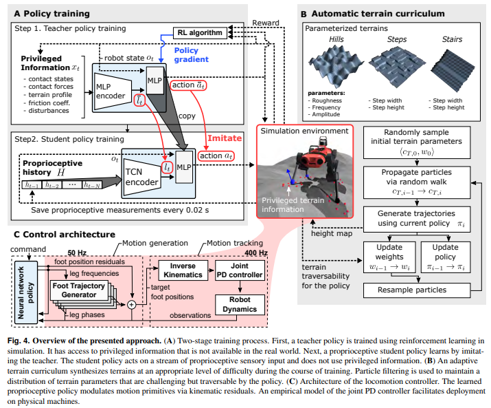
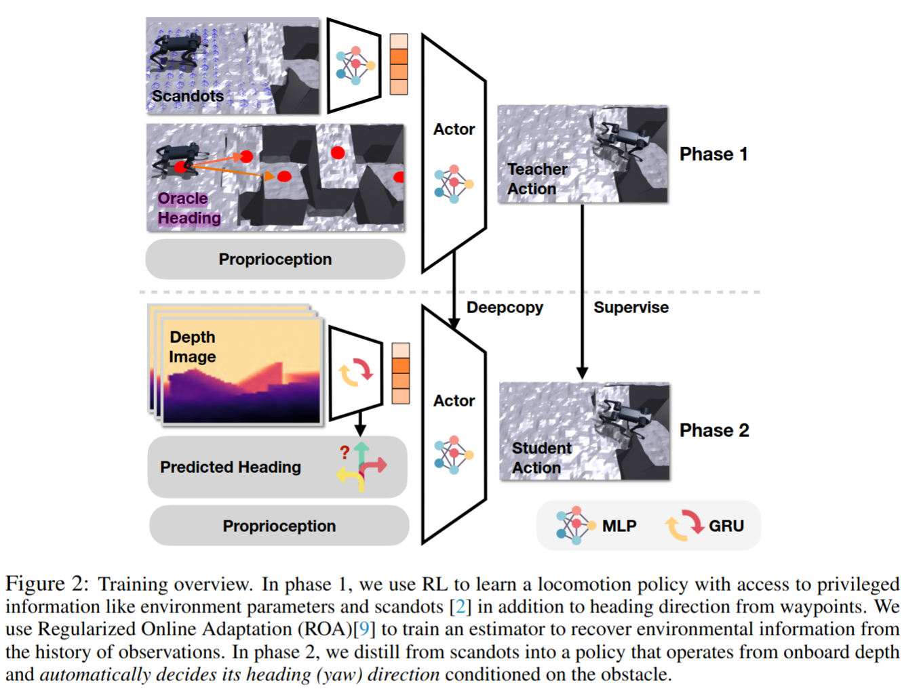
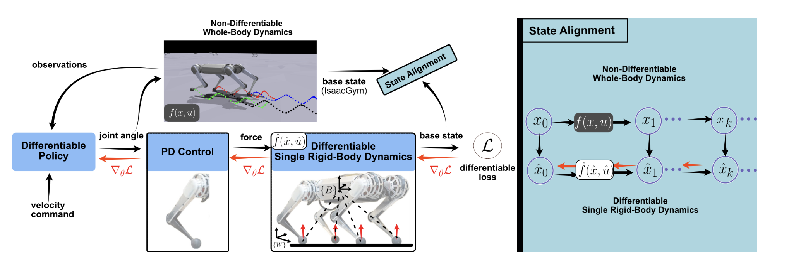

3️⃣ 3mins papers
paper
3mins
Hybrid Internal Model/Locomotion over Challenging Terrain/Extreme Parkour/Differentiable Simulation
Hybrid Internal Model
Learning Agile Legged Locomotion with Simulated Robot Response
- Contrasive Learning(SwaV 기반)을 통해 Latent vector 생성. Positive Pair와 Negative Pair를 분류하여 비슷한 환경에서는 Latent vector들이 비슷한 값을 갖도록, 다른 환경에서는 다른 표현을 갖도록 하는 클러스터링 방법을 사용하여 Latent vector space 공간을 구성하도록 함.
- 직접적으로 환경 정보를 예측하지 않고 간접적으로 proprioceptive data를 기반으로 지형에 대응하는 방법임
- 코드가 공개되어 있고 성능이 좋아보이며, 지형에 따라 Latent가 구분되는 것을 확인할 수 있으며 DreamWaQ보다 뚜렷하게 구분되는 특징을 확인할 수 있음
- Paper Link
- Code

Learning Quadrupedal Locomotion over Challenging Terrain
- 정말 유명한 논문임. 극도로 강건한 보행 컨트롤러 설계를 위해 proprioceptive (고유수용성 - 내계 정보 = joint encoder, IMU, etc) 만을 사용해 사족보행 로봇의 진흙, deformable terrain, 자갈, 동적인 장판, 식생, 거센 물살에서도 동작하게 만들 수 있음. 더 단순한 도메인에서 학습을 수행해도, 실제 자연 환경에서의 강건함을 극대화 할 수 있음.
- 구현을 위해 교사 정책을 학습하였음. 시뮬레이션에서 지면의 정확한 높이, 경사도, 접촉 상태와 같은 특권 (privileged) 정보를 활용하여 정책을 학습하고, 실제 로봇에서는 student policy를 사용하여 고유수용성 데이터만을 입력으로 사용하는 학생 정책을 학습함.
- 지난 논문인
Provable Partially Observable Reinforcement Learning with Privileged Information와 연결해 보면, 결국 이렇게 학습을 해서 동작을 하는 이유는, ’특권 정보’의 활용이 결정론적 필터 조건 (Deterministic Filter Condition) 조건을 만족하지 않더라도, 일부 제약 조건을 만족할 수 있다는 뜻으로 해석될 수 있음. 적절한 constraint 를 걸어서 lower bound를 만든다면, safe condition (constraint)를 만족할 수 있는 강화학습 보행 컨트롤러를 만들수 있지 않을까 생각됩니다. - Paper Link

Extreme Parkour with Legged Robots
- 저비용의 센서(depth 카메라 한개)와 저렴한 사족보행로봇(actuation이 부정확함)을 활용하여 매우 뛰어난 수준의 파쿠르 동작을 수행하는 모델을 만드는 방법에 대해서 소개하는 논문임.
- 이는 기존의 파쿠르와 같은 동작을 수행하는 논문들보다 훨씬 간단하면서도 저비용으로 실현할 수 있음을 증명했다.
ANYmal Parkour: Learning Agile Navigation for Quadrupedal Robots의 경우 구현을 하기 위해서는 mapping module 따로, planning module따로, control module 따로 필요했었지만, 이 방식은 하나의 네트워트만 학습시켜주면 된다. 이때 학습 기법은 위 이미지와 같이 privileged information을 통해 완성도 있는 teacher 모델을 만들고, 이를 Dual Distillation 학습 기법을 통하여 student 모델을 만든다. (phase 1: 전문가 데이터를 활용한 지도학습 / Phase 2: 지도 데이터 없이 로봇이 스스로 방향을 예측하며 학습) - 영상을 확인한 후, 학습이 매우 잘 이루어졌으며 sim-to-real 전이도 성공적으로 수행되었음을 알 수 있었다. 그러나 이러한 방식으로 학습된 네트워크가 충분히 안전한지에 대해서는 다소 의문이 든다. 특히, 좌우 및 후방에 대한 정보 없이 높은 속도로 전진하는 네트워크는 예상치 못한 위험을 초래할 가능성이 있어 보인다. 또한, 이전 연구에서는 상단 장애물까지 고려하여 로봇이 몸을 숙이는 동작을 학습하는 등 더 다양한 정보를 활용하여 성능을 향상시켰다. 따라서 단순히 저비용 네트워크를 구축하는 것이 반드시 최선의 방법이라고는 생각되지 않는다. 비용 절감도 중요하지만, 보다 풍부한 센서 정보를 활용하여 안전성과 전반적인 성능을 극대화하는 접근이 더 바람직할 것으로 보인다.
- Paper Link
- Video

Learning Quadruped Locomotion Using Differentiable Simulation
- 효율적인 역전파를 위해 단순한 surrogate dynamics model에서 얻은 smooth gradients와 정확한 forward simulation을 위해 non-differentiable 시뮬레이터의 high fidelity을 결합한 새로운 정책학습 방식 제안
- non-differentiable인 IsaacGym 시뮬레이터는 복잡한 contact 동역학을 시뮬레이션할 수 있으며, 이를 활용하여 단순화된 rigid-body dynamics model의 상태(state)를 정렬(align)함으로써, training pipeline이 실제 동역학에 기반을 두도록 보장
- Differential simulator를 따로 개발하는 움직임(brax)도 있는데 differential loss term을 추가해서 non-differential simulator를 보완하는 방식이 새로웠으며 PPO보다 적은 agent수로도 학습 reward가 빠르게 maximization된다는 점이 놀라웠음
- Paper Link
